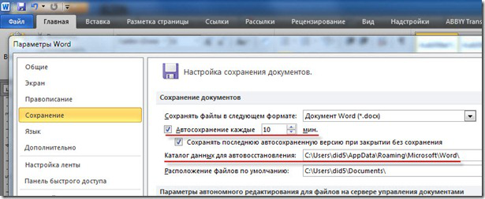
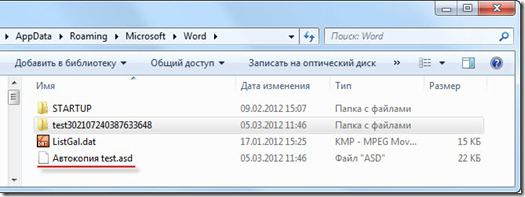
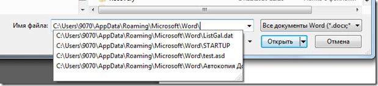

Восстановление Word-документа .doc/.docx из автосохраненного файла .asd
В результате системного сбоя одного из приложений офисного пакета MS Office можно потерять важный документ, над которым работали целый день. О том, что надо было сохраняться – говорить не буду. Лучше расскажу, как восстановить утраченный файл после аварийного закрытия, например, MS Word 2007/2010.
По умолчанию в настройках MS Office во всех приложениях задан параметр «Автосохранение каждые 10 мин.»

Что это значит?
Создаем новый документ Word и сохраняем его в Мои документы с именем test.docx. Далее набираем текст в документ, НЕ СОХРАНЯЕМСЯ и оставляем его на 10 минут. Через 10 минут в папке, которая также указана в настройках Word, создается файл с расширением .asd.

В файле «Автокопия test.asd» сохранены все изменения, которые мы внесли в документ за 10 минут. Если сохранить документ вручную и закрыть Word, то файл «Автокопия test.asd» удалится автоматически. А если MS Word закроется из-за системного сбоя, то файл останется.
По умолчанию папка для хранения файлов автосохранения для MS Office 2007/2010 в Windows 7 находится:
C:\Users\did5\AppData\Roaming\Microsoft\Word
Поэтому, если произошел форс-мажор и вы потеряли файл из-за сбоя Word, то идем в эту папку и ищем его там. Если нашли — читайте дальше, а если нет, то мои соболезнования.
Как открыть файл с расширением .asd
Файл с расширением .asd есть, но возникает следующий вопрос: “Чем открыть файл с расширением .asd?”. Логично предположить, что автосохраненный документ Word нужно открывать MS Word. Но при попытке его открыть получаем сообщение: “Приложению Microsoft Word не удается открыть данный файл, так как этот тип файлов не поддерживается”
Предположение было верное, но метод выбран не тот. Файл с расширением .asd открывается MS Word, но определенным способом.
1. Запускаем MS Word 2007/2010 –> Файл –> Параметры –> Сохранение. Копируем путь к папке, который задан в строке «Каталог данных для автовосстановления»
2. Открываем эту папку в проводнике, там должен лежать файл с расширением .asd
3. Word –> Файл –> Открыть. В окне «Открытие документа» в строке «Имя файла» вводим путь, который скопировали в пункте 2.
4. Должен появиться список с файлами в этой папке. Если нет, то удаляем последний слэш (\) и набираем его заново. В списке выбираем файл с расширением .asd и жмем кнопку Открыть.

Word откроет файл с расширением .asd
5. Сохраняем открывшийся файл с расширением .docx на диске
Заключение
Открыть файл .asd у меня получилось только этим способом, других вариантов не нашел. Если у Вас получилось открыть файл .asd по-другому, то обязательно напишите об этом в комментариях.